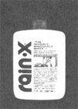
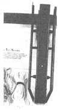
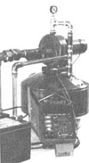
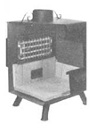
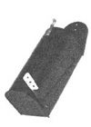
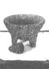
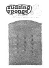
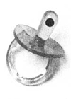

A listing of new and noteworthy products that might interest MOTHER's readers.
YOUR CAR'S UMBRELLA:
It's a familiar situation: You're driving down the expressway in a heavy rain and an 18-wheeler passes, throwing water on your already struggling wipers. For a moment you're blinded, scared, and perhaps in real danger. Well, R & T Products sells Rain-X for just such occasions. This liquid, when applied to your car's windshield and windows, helps water bead up and run off, resulting in less impairment of vision. In fact, the company claims that-in many cases -you may not even need to use windshield wipers. Rain-X is available in most department stores ... or you can write R & T Products, Dept. ME 7016 Jefferson Va. 22042. Ave., Falls Church,
OLD CHIMNEY FACE-LIFT:
Many older homes have chimney troubles, but you can give a "retired" smokestack a new lease on life by relining it with tiles. And Paul Heininger, president of Chimney Tile Aligner Corporation (Dept. ME, 208 W. Broadway, Gardnet, Mass. 01440), has just the device to make this rather difficult job easier and safer. Heininger says his method is much less expensive than replacing a chimney or putting in a stainless steel liner ... and that it works just as well as either of the more costly alternatives. The "Chimney Tile Aligner" is designed to accommodate 7" X 7 ", 7 " X 11", 8" X 8", and 8" X 12" tiles, which can be lowered accurately, lined, and sealed to meet present building code requirements. The illustrated user's manual is written clearly enough that, according to the company, almost any person with basic masonry skills can successfully line an existing chimney. Write the Chimney Tile Aligner Corporation for details
SOLAR PUMP PACKAGE:
The "Jet Pak" (A.Y. McDonald Mfg. Co., Dept. ME, P.O. Box 508, Dubuque, Iowa 52001) is a fully automatic solar water-pumping system that's designed for use on demand, night or day. A photovoltaic panel, two rechargeable batteries, a water-storage tank, a power control unit with over- and Under-voltage protection, and a 12-volt DC pump ... in fact, everything you'll need for installation except some piping and wire is in the package (prices start at $1,700). The company claims its system provides?in most locations-the equivalent of one solid hour of city water pressure daily, with a "sonless" reserve power bank of up to eight days. Application sites include shallow wells, cisterns, and storage or stock tanks.
MORE FROM YOUR WOODSTOVE:
Hydro-Coil International (Dept. ME, P.O. Box 7203 Eugene, Ore, 9740 1) produces a stainless steel piping system that allows you to use a woodstove to heat your family's water. "Hydro-Coil" has a lifetime warranty can be used for hot tubs/spas, swimming pools, and hydrorlic space heating ... and functions with either passive thermosiphon or active pumped circulation systems. It's available in 12-, 14-, 18-, and 24-inch lengths, either straight or with a right-angle bend. And the unit can be installed by a do-it-yourselfer with plumbing experience. Some woodstove manufacturers are now incorporating the "Hydro-Coil" system into their designs. Write the company for more details and a list of dealers.
MAILBOX MESSENGER:
Harry Schluter got tired of' walking down his long driveway, crossing a bus - rural road, and opening his mailbox . . . only to find nothing in it. Being an inventor with several noteworthy patents to his name, Harry decided to update the American mailbox to make it better serve the rural customer. With the blessing of the U.S. Postal Service, and with a patent pending on his device, Mr. Schluter is selling a handy white metal flag that you can easily attach to your own mailbox. It pops up automatically when the mail carrier opens the box. If there isn't any mail for you, though, the flag can be quickly put down with a handle to tell you, "Don't bother." This save-a-step item costs $8.27 plus $ 1.00 for shipping and handling. Order from Harry Schluter, Dept. ME, 94 Piney Ridge Dr., Hendersonville, N.C. 28739.
KEEP YOUR LID ON:
A garbage can is a terrific item, but when you lose its lid, the trash holder is practically useless. So the "Snap! Cover Holder" has been created to permanently secure any top to its can with a spring-loaded hinge bracket. The $3.45 (plus $1.00 shipping and handling) gadget can be attached to metal or plastic garbage holders with sheet metal screws and ordinary tools. Order from Invention Marketing, Inc., Test Marketing Dept. (ME), 701 Smithfield St., Pittsburgh,Pa.15222.
MEXICAN MIXINGS:
Sometimes it's hard to find all the ingredients called for in a special Mexican recipe. Well, to avoid that frustration in the future, you can order anything you need for propel Mexican dishes from La Cocina Mexicana (The Mexican Kitchen), Dept. ME, P.O. Box 213, Brownsvilie, Tex. 78520. The company markets items from dried pinto beans to Masa Harina (corn flour for making tortillas) ... from brown sugar coffee sweeteners called piloncillo to chilies and chili sauces ... from spices and cornhusks (for making tamales) to Mexican cookies and mango nectar. Write for a list of the latest reasonably priced offerings.
SINFULLY LUXURIOUS:
The little "Sudsing Sponge", sold for $1.49 by Charles Bishop & Company (Dept. ME, P.O. Box 246, Princeton, N.J. 08540), is one of those luxury items that can quickly become indispensable, especially if you're partial to soapy, sudsy baths and showers. This particular sponge has two sides-one rough like a luffa, the other soft?and you plop a soap bar in between, Holes on both sides let air through, so that with a squeeze or two under water, the soap that's held in the sponge will really lather up ... and so will you.
A SENSITIVE SUCKER:
Parents with fever-prone offspring will be relieved to see the "Baby Temp" pacifier, the "gnaw piece" that's equipped with a temperature-sensitive dot. The bright green spot changes to black if your child has a temperature of 100F or more. "Baby Temp" (made by TRP Energy Sensors, Dept. ME, 232 Madison Ave., New York, N.Y. 10016) comes in standard and orthodontic shapes. It's available in many stores, or can be mail-ordered for $2.50 plus 50c shipping and handling,
|
 |
 |
 |
|
 |
 |
|
|
 |
 |
 |